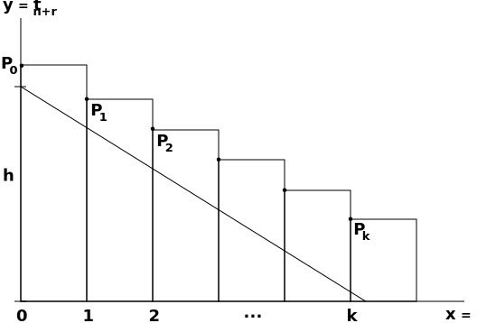

<!DOCTYPE html>
<html>
<head>
	<meta charset="utf-8"/>
	<meta name="latexinput" content="mmd-cambridge-header"/>
	<title>A Course of Modern Analysis-MethodsOfSummation-8-2</title>
	<meta name="subtitle" content="An introduction to the general theory of
infinite processes and analytic functions;
with an account of the principal
transcendental functions."/>
	<meta name="author" content="E.T. Whittaker and G.N. Watson"/>
	<meta name="editor" content="Eric Nitardy"/>
	<meta name="date" content="Aug 19, 2014"/>
	<meta name="titlefile" content="mmd-WandW-title"/>
	<meta name="copyrightfile" content="mmd-WandW-copyright"/>
	<meta name="test" content="And this is a new key-value pair"/>
	<meta name="latexmode" content="memoir"/>
	<meta name="latexinput" content="mmd-cambridge-begin-doc"/>
	<meta name="latexfooter" content="mmd-cambridge-footer"/>
	<link type="text/css" rel="stylesheet" href="css/documentation.css"/>
<script type="text/javascript"
src="http://cdn.mathjax.org/mathjax/latest/MathJax.js?config=TeX-AMS_HTML-full"></script>
<script type="text/javascript" src="js/showhide.js"></script>
<script type="text/javascript" src="js/mathjaxend.js"></script>
</head>
<body>

<div id="header"><h1><a href="CMA00-FrontMN.html">A COURSE OF MODERN<span>&nbsp;</span>ANALYSIS</a></h1><h2>E. T. WHITTAKER <span style="font-size:65%;">AND</span> G.<span>&nbsp;</span>N.<span>&nbsp;</span>WATSON</h2></div>
<div id="content">
<div class="contenttext">

<h3 id="8.4.methodsofsummingseries.">8.4 Methods of &#8216;summing&#8217; series.</h3>

<p>We have seen that it is possible to obtain a development of the form
<span class="math">\[
     f(x) = \sum_{m=0}^{n} A_mx^{-m} + R_n(x),
\]</span>
where <span class="math">\(R_n (x) \rightarrow \infty\)</span> as <span class="math">\(n \rightarrow\infty\)</span>, and the series <span class="math">\(\sum\limits_{m=0}^{\infty} A_m x^{-m}\)</span> does not converge. </p>

<p>We now consider what meaning, if any, can be attached to the &#8216;sum&#8217; of
a non-convergent series. That is to say, given the numbers <span class="math">\(a_0\)</span>, <span class="math">\(a_1\)</span>, <span class="math">\(a_2, \dots\)</span>,
we wish to formulate definite rules by which we can obtain from them a
number <span class="math">\(S\)</span> such that <span class="math">\(S = \sum_{n=0}^{\infty} a_n\)</span> if <span class="math">\(\sum_{n=0}^{\infty} a_n\)</span> converges, and such that <span class="math">\(S\)</span> exists
when this series does not converge. </p>

<h4 id="8.41borelsmethodofsummation.">8.41 Borel&#8217;s method of summation.<a class="marginmark" onClick="toggleHide('mn:1,-2');">&#91;1&#93;</a></h4>

</div>
<div class="marginnotes"  id="mn:1,-2"  style="margin-top: -2em; margin-bottom: -2em;"><a class="marginmark">&#91;1&#93;</a>Borel, <a href="https://archive.org/details/leconssurlesseri00boreuoft"><em>Leçons sur les S&eacute;ries Divergentes</em></a> (1901), pp. 97&#8211;115. <a onClick="hideIt('mn:1,-2')" title="hide margin note" class="reversefootnote">&#160;&#8617;</a>
</div>
<div class="contenttext">

<p>We have seen (<a href="CMA07-4-BorelsTheoremMN.html#7.81borelsintegralandanalyticcontinuation.">&#167;7.81</a>) that
<span class="math">\[
     \sum_{n=0}^{\infty} a_n z^n =
     \! \int_0^{\infty} \! e^{-t} \phi(tz) \, d t ,
\]</span>
where <span class="math">\(\phi(tz) = \sum\limits_{n=0}^{\infty} \dfrac{a_n t^nz^n}{n!} \)</span>, the equation certainly being true inside the circle
of convergence of <span class="math">\(\sum\limits_{n=0}^{\infty} a_n z^n\)</span> . If the integral exists at points <span class="math">\(z\)</span> outside this
circle, we define the &#8216;Borel sum&#8217; of <span class="math">\(\sum\limits_{n=0}^{\infty} a_n z^n\)</span> to mean the integral. </p>

<p>Thus, whenever <span class="math">\(\mathfrak{Re}(z) < 1\)</span>, the &#8216;Borel sum&#8217; of the series <span class="math">\(\sum\limits_{n=0}^{\infty} z^n\)</span> is
<span class="math">\[
     \int_0^\infty \! e^{-t}e^{tz} \, d t = (1-z)^{-1}.
\]</span>
If the &#8216;Borel sum&#8217; exists we say that the series is &#8216;summable <span class="math">\((B)\)</span>&#8217;. </p>

<h4 id="8.42eulersmethodofsummation.">8.42 Euler&#8217;s method of summation.<a class="marginmark" onClick="toggleHide('mn:2,-1');">&#91;2&#93;</a></h4>
</div>
<div class="marginnotes"  id="mn:2,-1"  style="margin-top: -1em; margin-bottom: -1em;"><a class="marginmark">&#91;2&#93;</a><a href="http://eulerarchive.maa.org/pages/E212.html"><em>Instit. Calc. Diff.</em></a> (1755). See also Borel, <a href="https://archive.org/details/leconssurlesseri00boreuoft"><em>loc. cit.</em></a> Introduction.<a onClick="hideIt('mn:2,-1')" title="hide margin note" class="reversefootnote">&#160;&#8617;</a>
</div>
<div class="contenttext">

<p>A method, practically due to Euler, is suggested by the theorem of <a href="CMA03-4-PowerSeriesMN.html#abelstheoremoncontinuityuptothecircleofconvergence.">&#167;3.71</a>;
the &#8216;sum&#8217; of <span class="math">\(\sum\limits_{n=0}^{\infty} a_n\)</span> may be defined as <span class="math">\(\lim\limits_{x \rightarrow 1-0}\;\! \sum\limits_{n=0}^{\infty} a_n x^n\)</span>, when this limit exists. </p>

<p>Thus the &#8216;sum&#8217; of the series <span class="math">\(1 - 1 + 1 - 1 + \cdots\)</span> would be
<span class="math">\[
     \lim_{x \rightarrow 1-0} (1 - x + x^2 - \cdots ) = \lim_{x \rightarrow 1-0} (1 + x)^{-1} = \frac{1}{2}.
\]</span></p>

<h4 id="8.43cesarosmethodofsummation.">8.43 Ces&agrave;ro&#8217;s method of summation.<a class="marginmark" onClick="toggleHide('mn:3,-1');">&#91;3&#93;</a></h4>
</div>
<div class="marginnotes"  id="mn:3,-1"  style="margin-top: -1em; margin-bottom: -1em;"><a class="marginmark">&#91;3&#93;</a><a href="https://archive.org/details/s2bulletindessci14fran"><em>Bulletin des Sciences Math.</em> (2), <strong>xiv</strong>. (1890)</a>, p. 114.<a onClick="hideIt('mn:3,-1')" title="hide margin note" class="reversefootnote">&#160;&#8617;</a>
</div>
<div class="contenttext">

<p>Let <span class="math">\(s_n = a_1 + a_2 + \cdots + a_n\)</span>; then <em>if <span class="math">\(S =\lim\limits_{n \rightarrow \infty}  \dfrac{1}{n}(s_1 + s_2 + \cdots + s_n )\)</span> exists</em>, we
say that <span class="math">\(\sum_{n=1}^{\infty} a_n\)</span> is &#8216;<em>summable</em> <span class="math">\((C\:\!  1)\)</span>&#8217;, and that its sum <span class="math">\((C\:\!  1)\)</span> is <span class="math">\(S\)</span>. It is
necessary to establish the &#8216;condition of consistency&#8217;,<a class="marginmark" onClick="toggleHide('mn:4,-3');">&#91;4&#93;</a> namely that <span class="math">\(S = \sum_{n=1}^{\infty} a_n\)</span>
when this series is convergent .</p>
</div>
<div class="marginnotes"  id="mn:4,-3"  style="margin-top: -3em; margin-bottom: -3em;"><a class="marginmark">&#91;4&#93;</a>See the end of <a href="#8.4.methodsofsummingseries.">&#167;8.4</a>.<a onClick="hideIt('mn:4,-3')" title="hide margin note" class="reversefootnote">&#160;&#8617;</a>
</div>
<div class="contenttext">

<p>To obtain the required result, let <span class="math">\(\sum\limits_{m=1}^{\infty} a_m = s\)</span>, <span class="math">\(\sum\limits_{m=1}^{\infty} s_m = nS_{n\:\!\!}\)</span>; then we have to prove that <span class="math">\(S_n \rightarrow s\)</span>,</p>

<p>Given <span class="math">\(\epsilon\)</span>, we can choose <span class="math">\(n\)</span> such that <span class="math">\(\left| \, \sum\limits_{m=m+1}^{n+p} a_m \, \right| < \epsilon \)</span> for all values of <span class="math">\(p\)</span>, and
so that <span class="math">\(\left| \,  s - s_n \, \right| < \epsilon \:\!\!\)</span>. </p>

<p>Then, if <span class="math">\(\nu  > n\)</span>, we have
<span class="math">\[ \begin{align*}
     S_{\nu}=
     a_1 &+ a_2 \left(1 - \frac{1}{\nu} \right) +
     \cdots + a_n \left(1 - \frac{n-1}{\nu} \right) \\
     &+
     a_{n+1} \left(1 - \frac{n}{\nu} \right)+
     \cdots + a_{\nu} \left(1 - \frac{\nu-1}{\nu} \right) .
\end{align*} \]</span>
Since <span class="math">\(1\)</span>, <span class="math">\(1 - v^{-1}\)</span>, <span class="math">\(1 - 2v^{-1}, \dots\)</span> is a positive decreasing sequence, it follows
from Abel&#8217;s inequality (<a href="CMA02-2-SeriesMN.html#abelsinequality.">&#167;2.301</a>) that
<span class="math">\[
     \left| \, \:\!
          a_{n+1} \left(1 - \frac{n}{\nu} \right) +
          a_{n+2} \left(1 - \frac{n+1}{\nu} \right) +
          \cdots + a_{\nu} \left(1 - \frac{\nu-1}{\nu} \right) 
     \, \right| <
     \left(
          1 - \frac{n}{\nu}
     \right) \epsilon .
\]</span>
Therefore
<span class="math">\[
     \left| \, \:\!
          S_{\nu} -
          \left\{
               a_1 + 
               a_2 \left(1 - \frac{1}{\nu} \right) +
               \cdots + a_n \left(1 - \frac{n-1}{\nu} \right)
          \right\}
     \, \right | <
      \left(
          1 - \frac{n}{\nu}
     \right) \epsilon .
\]</span></p>

<p>Making <span class="math">\(\nu \rightarrow\infty \)</span>, we see that, if <span class="math">\(S\)</span> be any one of the limit points (<a href="CMA02-1-LimitsMNMN.html#bolzanosection">&#167;2.21</a>) of <span class="math">\(S_{\nu}\)</span>, then
<span class="math">\[
     \left| \,
          S- \sum_{m=1}^n a_m 
     \, \right| \leq
     \epsilon .
\]</span>
Therefore, since <span class="math">\(\left|\,  s - s_n \,\right| \leq \epsilon \;\!\! \)</span>, we have
<span class="math">\[
     \left| \, S-s \, \right| \leq 2 \epsilon .
\]</span>
This inequality being true for <em>every</em> positive value of <span class="math">\(\epsilon\)</span> we infer, as in <a href="CMA02-1-LimitsMNMN.html#bolzanosection">&#167;2.21</a>,
that <span class="math">\(S = s\)</span>; that is to say <span class="math">\(S_{\nu}\)</span> has the unique limit <span class="math">\(s\)</span>; this is the theorem which had to be proved. </p>

<blockquote>
<p><em>Example</em> 1. Frame a definition of &#8216;uniform summability <span class="math">\((C\:\!  1)\)</span> of a series of variable terms.&#8217; </p>
</blockquote>

<blockquote>
<h6 id="8.43example2"><em>Example</em> 2. If <span class="math">\(b_{n,\;\!\nu} \geq b_{n+1,\;\!\nu} \geq 0\)</span> when <span class="math">\(n< \nu\)</span> and if, when <span class="math">\(n\)</span> is <em>fixed</em>, <span class="math">\(\lim\limits_{\nu \rightarrow \infty} b_{n,\;\!\nu} = 1\)</span>, and if <span class="math">\(\sum\limits_{m=1}^{\infty} a_m =s\)</span>, then <span class="math">\( \displaystyle \lim_{\nu \rightarrow \infty}   \left\{   \sum_{n=1}^{\nu} a_n b_{n,\;\!\nu}   \right\}  =s.\)</span></h6>
</blockquote>

<h5 id="8.431cesarosgeneralmethodofsummation.">8.431 Ces&agrave;ro&#8217;s general method of summation.</h5>

<p>A series <span class="math">\(\sum\limits_{n=1}^{\infty} a_n\)</span> is said to be &#8216;summable <span class="math">\((C\:\! r)\)</span>&#8217; if <span class="math">\(\lim\limits_{\nu \rightarrow \infty} \sum\limits_{n=1}^{\nu} a_n b_{n,\;\!\nu}\)</span> exists, where
<span class="math">\[ \begin{align*}
     b_{0,\;\!\nu} 
     &=1 \\
     b_{n,\;\!\nu}
     &=
     \left\{
          \left(
               1 + \frac{r}{v+1-n}
          \right)
          \left(
               1 + \frac{r}{v+2-n}
          \right)
          \cdots
          \left(
               1 + \frac{r}{v-1}
          \right)
     \right\}^{-1} \! .
\end{align*} \]</span>
It follows from <a href="#8.43example2">&#167;8.43 example 2</a> that the &#8216;condition of consistency&#8217; is satisfied; in
fact it can be proved<a class="marginmark" onClick="toggleHide('mn:5,-4');">&#91;5&#93;</a> that if a series is summable <span class="math">\((C\:\! r')\)</span> it is also summable <span class="math">\((C\:\! r)\)</span> when
<span class="math">\(r > r' \!\)</span>; the condition of consistency is the particular case of this result when r = 0. </p>
</div>
<div class="marginnotes"  id="mn:5,-4"  style="margin-top: -4em; margin-bottom: -4em;"><a class="marginmark">&#91;5&#93;</a>Bromwich, <a href="https://archive.org/stream/introductiontoth00bromuoft#page/310/mode/2up"><em>Infinite Series</em>, &#167;122</a> (pp. 310&#8211;312). <a onClick="hideIt('mn:5,-4')" title="hide margin note" class="reversefootnote">&#160;&#8617;</a>
</div>
<div class="contenttext">

<h4 id="8.44themethodofsummationofriesz.">8.44 The method of summation of Riesz.<a class="marginmark" onClick="toggleHide('mn:6,-1');">&#91;6&#93;</a></h4>
</div>
<div class="marginnotes"  id="mn:6,-1"  style="margin-top: -1em; margin-bottom: -1em;"><a class="marginmark">&#91;6&#93;</a><a href="https://archive.org/details/comptesrendusheb149acad"><em>Comptes Rendus</em>, <strong>cxlix</strong>. (1909)</a>, pp. 18&#8211;21.<a onClick="hideIt('mn:6,-1')" title="hide margin note" class="reversefootnote">&#160;&#8617;</a>
</div>
<div class="contenttext">

<p>A more extended method of &#8216;summing&#8217; a series than the preceding is by means of
<span class="math">\[
     \lim_{\nu \rightarrow \infty} \;\!
     \sum_{n=1}^\infty 
     \left(
          1- \frac{\lambda_n}{\lambda_\nu}
     \right)^{\:\!\! r} a_n .
\]</span>
in which <span class="math">\(\lambda_n\)</span> is any real function of <span class="math">\(n\)</span> which tends to infinity with <span class="math">\(n\)</span>. A series for which
this limit exists is said to be &#8216;summable <span class="math">\((R\:\! r)\)</span> with sum-function <span class="math">\(\lambda_n\)</span>&#8217;. </p>

<h3 id="8.5hardysconvergencetheorem.">8.5 Hardy&#8217;s convergence theorem.<a class="marginmark" onClick="toggleHide('mn:7,-1');">&#91;7&#93;</a></h3>
</div>
<div class="marginnotes"  id="mn:7,-1"  style="margin-top: -1em; margin-bottom: -1em;"><a class="marginmark">&#91;7&#93;</a><a href="http://babel.hathitrust.org/cgi/pt?id=inu.30000021006535;view=1up;seq=7"><em>Proc. London Math. Soc.</em> (2), <strong>viii.</strong> (1910)</a>, pp. 301&#8211;304. For the proof here given, we are indebted to Mr. Littlewood. <a onClick="hideIt('mn:7,-1')" title="hide margin note" class="reversefootnote">&#160;&#8617;</a>
</div>
<div class="contenttext">

<p><em>Let <span class="math">\(\sum\limits_{n=1}^\infty a_n \)</span> be a series which is summable <span class="math">\((C\:\!  1)\)</span>. Then if
<span class="math">\[
     a_n = O\left( 1 \middle/ n \right),
\]</span>
the series <span class="math">\(\sum\limits_{n=1}^\infty a_n \)</span> converges. </em></p>

<p>Let <span class="math">\(s_n = a_1 + a_2 + \cdots + a_n\)</span>
then since <span class="math">\(\sum\limits_{n=1}^\infty a_n \)</span> is summable <span class="math">\((C\:\!  1)\)</span>, we have
<span class="math">\[
     s_1 + s_2 + \cdots + s_n =
     n\left\{ s + o(1) \right\},
\]</span>
where <span class="math">\(s\)</span> is the sum <span class="math">\((C\:\!  1)\)</span> of <span class="math">\(\sum\limits_{n=1}^\infty a_n \)</span>. </p>

<p>Let
<span class="math">\[
     s_m - s  = t_m, \quad (\, m = 1, \, 2, \cdots , \:\! n\,),
\]</span>
and let
<span class="math">\[
     t_1 + t_2 + \cdots + t_n = \sigma_n .
\]</span></p>

<p>With this notation, it is sufficient to shew that, if <span class="math">\(\left|\, a_n \,\right| < Kn^{-1}\)</span>, where <span class="math">\(K\)</span>
is independent of <span class="math">\(n\)</span>, and if <span class="math">\(\sigma_ n = n\cdot o (1)\)</span>, then <span class="math">\(t_n \rightarrow 0\)</span> as <span class="math">\(n \rightarrow \infty\)</span>. </p>

<p>Suppose first that <span class="math">\(a_1\)</span>, <span class="math">\(a_2, \dots\)</span> are real. Then, if <span class="math">\(t_n\)</span> does not tend to zero,
there is some positive number <span class="math">\(h\)</span> such that there are an unlimited number of
the numbers <span class="math">\(t_n\)</span> which satisfy <em>either</em> (i) <span class="math">\(t_n > h\)</span> <em>or</em> (ii) <span class="math">\(t_n < -h\)</span>. We shall shew
that either of these hypotheses implies a contradiction. Take the former,<a class="marginmark" onClick="toggleHide('mn:8,-4');">&#91;8&#93;</a> and choose <span class="math">\(n\)</span> so that <span class="math">\(t_n > h\)</span>. </p>
</div>
<div class="marginnotes"  id="mn:8,-4"  style="margin-top: -4em; margin-bottom: -4em;"><a class="marginmark">&#91;8&#93;</a>The reader will see that the latter hypothesis involves a contradiction by using arguments of a precisely similar character to those which will be employed in dealing with the former hypothesis.<a onClick="hideIt('mn:8,-4')" title="hide margin note" class="reversefootnote">&#160;&#8617;</a>
</div>
<div class="contenttext">

<p>Then, when <span class="math">\(r = 0\)</span>, <span class="math">\(1\)</span>, <span class="math">\(2\)</span>, <span class="math">\(\dots\)</span>,
<span class="math">\[
     \left|\, a_{n+1} \,\right| < \left. \vphantom{z} K \middle/ n \right. .
\]</span>
Now plot the points <span class="math">\(P_r\)</span> whose coordinates are <span class="math">\((r, t_{\:\! n+r})\)</span> in a Cartesian
diagram. Since <span class="math">\(t_{\:\! n+r+1}-t_{\:\! n+r} = a_{n+r+1}\)</span>, the slope of the line <span class="math">\(P_r P_{r+1}\)</span> is greater than
than <span class="math">\(-\left.  K \middle/ n \right.\)</span>. Let <span class="math">\(\theta= \arctan (\left.  K \middle/ n \right.)\)</span>. </p>

<figure>

<figcaption>Figure 3: Plotting <span class="math">\(P_r = (r,t_{\:\! n+r})\)</span>.</figcaption>
</figure>

<p>Therefore the points <span class="math">\(P_0\)</span>, <span class="math">\(P_1\)</span>, <span class="math">\(P_2, \dots\)</span> lie above the line <span class="math">\(y = h - x \tan\theta\)</span>.
Let <span class="math">\(P_k\)</span> be the last of the points <span class="math">\(P_0\)</span>, <span class="math">\(P_1, \dots\)</span>, which lie on the left of <span class="math">\(x=h \cot\theta\)</span>,
so that <span class="math">\(k \leq h \cot\theta\)</span>. </p>

<p>Draw rectangles as shewn in the figure. The area of these rectangles
exceeds the area of the triangle bounded by <span class="math">\(y = h - x \tan \theta\)</span> and the axes;
that is to say
<span class="math">\[\begin{align*}
     \sigma_{n+k} - \sigma_{n-1} 
     &=
     t_n + t_{n+1} + \cdots + t_{n+k} \\
     &>
     \frac{1}{2} h^2 \cot \theta =
     \frac{1}{2} h^2 K^{-1} n.
\end{align*}\]</span></p>

<p>But
<span class="math">\[\begin{align*} 
     \left|\,
           \sigma_{n+k} - \sigma_{n-1} 
      \,\right|
     & \leq
     \left|\,
          \sigma_{n+k}
     \,\right| +
     \left|\,
          \sigma_{n-1}
     \,\right| \\
     &=
      (n + k)\cdot o(1) + (n-1)\cdot o(1) \\
     &=
      n\cdot o(1), 
\end{align*}\]</span>
since <span class="math">\(k \leq hnK^{-1}\)</span>, and <span class="math">\(h\)</span>, <span class="math">\(K\)</span> are independent of <span class="math">\(n\)</span>. </p>

<p>Therefore, for a set of values of <span class="math">\(n\)</span> tending to infinity,
<span class="math">\[
     \frac{1}{2} h^2 K^{-1} <
     n \cdot o(1),
\]</span>
which is impossible since <span class="math">\(\frac{1}{2} h^2 K^{-1}\)</span> is <em>not</em> <span class="math">\(o(1)\)</span> as <span class="math">\(n \rightarrow \infty\)</span>. </p>

<p>This is the contradiction obtained on the hypothesis that <span class="math">\(\varlimsup t_n \geq h > 0\)</span>;
therefore <span class="math">\(\varlimsup t_n \leq 0\)</span>. Similarly, by taking the corresponding case in which
<span class="math">\(t_n \leq - h\)</span>, we arrive at the result <span class="math">\(\varliminf t_n \geq 0\)</span>. Therefore since <span class="math">\(\varlimsup t_n  \geq \varliminf t_n \)</span>,
we have
<span class="math">\[
     \varlimsup t_n  = \varliminf t_n  = 0, 
\]</span>
and so
<span class="math">\[
     t_n \rightarrow 0. 
\]</span>
That is to say <span class="math">\(s_n \rightarrow s\)</span>, <em>and so <span class="math">\(\sum\limits_{n=1}^\infty a_n \)</span> is convergent and its sum is <span class="math">\(s\)</span>.</em> </p>

<p>If <span class="math">\(a_n\)</span> be complex, we consider <span class="math">\(\mathfrak{Re} (a_n)\)</span> and <span class="math">\(\mathfrak{Im} (a_n)\)</span> separately, and find
that <span class="math">\(\sum\limits_{n=1}^\infty \mathfrak{Re} (a_n) \)</span> and <span class="math">\(\sum\limits_{n=1}^\infty \mathfrak{Im} (a_n) \)</span> converge by the theorem just proved, and so <span class="math">\(\sum\limits_{n=1}^\infty a_n \)</span> converges. </p>

<p>The reader will see in <a href="CMA09-1-FourierSeriesMN.html">Chapter <strong>ix</strong></a> that this result is of great importance
in the modern theory of Fourier series. </p>

<blockquote>
<p><em>Corollary</em>. <em>If <span class="math">\(a_{n}(\xi)\)</span> be a function of <span class="math">\(\xi\)</span> such that <span class="math">\(\sum\limits_{n=1}^\infty a_{n}(\xi) \)</span> is uniformly summahle <span class="math">\((C\:\!  1)\)</span> throughout a domain of values of <span class="math">\(\xi\)</span>, and if <span class="math">\(\left|\, a_{n}(\xi) \,\right| <  Kn^{-1}\)</span>, where <span class="math">\(K\)</span> is independent of <span class="math">\(\xi\)</span>, then <span class="math">\(\sum\limits_{n=1}^\infty a_{n}(\xi) \)</span> converges uniformly throughout the domain.</em> </p>
</blockquote>
</div>
<div class="marginnotes"  id="mn:9,+4"  style="margin-top: +4em; margin-bottom: +4em;"><a class="marginmark">&#91;9&#93;</a>It is assumed that <span class="math">\(a_{n}(\xi)\)</span> is real; the extension to complex variables can be made as in the former theorem. If no such number <span class="math">\(h\)</span> existed, <span class="math">\(t_{n}(\xi)\)</span> would tend to zero uniformly.<a onClick="hideIt('mn:9,+4')" title="hide margin note" class="reversefootnote">&#160;&#8617;</a>
</div>
<div class="contenttext">

<blockquote>
<p>For, retaining the notation of the preceding section, if <span class="math">\(t_{n}(\xi)\)</span> does not tend to zero
uniformly, we can find a positive number <span class="math">\(h\)</span> independent of <span class="math">\(n\)</span> and <span class="math">\(\xi\)</span> such that an infinite
sequence of values of <span class="math">\(n\)</span> can be found for which <span class="math">\(t_{n}(\xi_{n})  > h\)</span> or <span class="math">\(t_{n}(\xi_{n})  > -h\)</span> for some point <span class="math">\(\xi_{n}\)</span> of the domain;<a class="marginmark" onClick="toggleHide('mn:9,+4');">&#91;9&#93;</a> the value of <span class="math">\(\xi_n\)</span> depends on the value of <span class="math">\(n\)</span> under consideration. </p>

<p>We then find, as in the original theorem,
<span class="math">\[
     \frac{1}{2} h^2 K^{-1} <
         n \cdot o(1),     
\]</span>
for a set of values of <span class="math">\(n\)</span> tending to infinity. The contradiction implied in the inequality shews that <span class="math">\(h\)</span> does not exist,<a class="marginmark" onClick="toggleHide('mn:10,-7');">&#91;10&#93;</a> and so <span class="math">\(t_{n}(\xi) \rightarrow 0\)</span> uniformly. </p>
</blockquote>
</div>
<div class="marginnotes"  id="mn:10,-7"  style="margin-top: -7em; margin-bottom: -7em;"><a class="marginmark">&#91;10&#93;</a>It is essential to observe that the constants involved in the inequality do not depend on <span class="math">\(\xi_{n}\)</span>. For if, say, <span class="math">\(K\)</span> depended on <span class="math">\(\xi_{n}\)</span> would really be a function of <span class="math">\(n\)</span> and might be <span class="math">\(o (1)\)</span> <em>qua</em> function of <span class="math">\(n\)</span>, and the inequality would not imply a contradiction. <a onClick="hideIt('mn:10,-7')" title="hide margin note" class="reversefootnote">&#160;&#8617;</a>
</div>
<div class="contenttext">

<h3 id="references.">References.</h3>

<dl>
<dt><nbsp></dt>
<dd>H. Poincar&eacute; <a href="https://archive.org/details/actamathematica09lefgoog"><em>Acta Mathematica</em>, <strong>viii</strong>. (1886)</a>, pp. 295&#8211;344.</dd>

<dd>E. Borel, <a href="https://archive.org/details/leconssurlesseri00boreuoft"><em>Leçons sur les S&eacute;ries Divergentes</em></a> (Paris, 1901).</dd>

<dd>T. J. I&#8217;a. Bromwich, <a href="https://archive.org/details/introductiontoth00bromuoft"><em>Theory of Infinite Series</em></a> (1908), Ch. <strong>xi</strong>.</dd>

<dd>E. W. Barnes, <a href="http://rsta.royalsocietypublishing.org/content/206/402-412.toc"><em>Phil. Trans. of the Royal Society</em>, 206, <strong>a</strong> (1906)</a>, pp. 249&#8211;297.</dd>

<dd>G. H. Hardy and J. E. Littlewood, <a href="https://archive.org/stream/CollectedPapersOfG.H.Hardy-Volume6/Lms-CollectedPapersOfGHHardyVolume6#page/n421"><em>Proc. London Math. Soc.</em> (2), <strong>xi</strong>. (1913)</a>, pp. 1&#8211;16.<a class="marginmark" onClick="toggleHide('mn:11,-6');">&#91;11&#93;</a></dd>

<dd>G. N. Watson, <a href="http://rsta.royalsocietypublishing.org/content/211/471-483"><em>Phil. Trans. of the Royal Society</em>, 211, <strong>a</strong> (1912)</a>, pp. 279&#8211;313.</dd>

<dd>S. Chapman, <a href="http://babel.hathitrust.org/cgi/pt?id=mdp.39015046540632;view=1up;seq=5"><em>Proc. London Math. Soc.</em> (2), <strong>ix</strong>. (1911)</a>, pp. 369&#8211;409.<a class="marginmark" onClick="toggleHide('mn:12,-1');">&#91;12&#93;</a></dd>
</dl>
</div>
<div class="marginnotes"  id="mn:11,-6"  style="margin-top: -6em; margin-bottom: -6em;"><a class="marginmark">&#91;11&#93;</a>This paper contains many references to recent developments of the subject. <a onClick="hideIt('mn:11,-6')" title="hide margin note" class="reversefootnote">&#160;&#8617;</a>
</div>
<div class="contenttext">
</div>
<div class="marginnotes"  id="mn:12,-1"  style="margin-top: -1em; margin-bottom: -1em;"><a class="marginmark">&#91;12&#93;</a>A bibliography of the literature of summable series will be found on p. 372 of this memoir.<a onClick="hideIt('mn:12,-1')" title="hide margin note" class="reversefootnote">&#160;&#8617;</a>
</div>
<div class="contenttext">
<div id="exercises">

<h3 id="miscellaneousexamples.">Miscellaneous Examples.</h3>

<ol>
<li><p>Shew that
<span class="math">\[
 \int_0^{\infty} \! \frac{e^{-xt}}{1+t^2} \, d t
 \sim
 \frac{1}{x} - \frac{2!}{x^3} + \frac{4!}{x^5} - \cdots
\]</span>
when <span class="math">\(x\)</span> is real and positive. </p></li>
<li><p>Discuss the representation of the function
<span class="math">\[
 f(x) =
 \int_{-\infty}^0 \phi(t) \:\! e^{tx} \, d t
\]</span>
(where <span class="math">\(x\)</span> is supposed real and positive, and <span class="math">\(\phi\)</span> is a function subject to certain general conditions) by means of the series
<span class="math">\[
 f(x) =
 \frac{\phi(0)}{x} -
 \frac{\phi'(0)}{x^2} +
 \frac{\phi''(0)}{x^3} - \cdots .
\]</span>
Shew that in certain cases (e.g. <span class="math">\(\phi(t) = e^{at}\)</span>) the series is absolutely convergent, and
represents <span class="math">\(f(x)\)</span> for large positive values of <span class="math">\(x\)</span> but that in certain other cases the series is
the asymptotic expansion of <span class="math">\(f(x)\)</span>. </p></li>
<li><p>Shew that
<span class="math">\[
 e^z z^{-a} \! \int_{z}^{\infty} \! e^{-x} x^{a-1} d x
 \sim
 \frac{1}{z} +
 \frac{a-1}{z^2} +
 \frac{(a-1)(a-2)}{z^3} + \cdots
\]</span>
for large positive values of <span class="math">\(z\)</span>.
<span class="math">\(\vphantom{\\ 3\\}\)</span><br>
(Legendre, <a href="https://archive.org/details/exercicescalculi01legerich"><em>Exercices de Calc. Int.</em></a> (1811), p. 340.)</p></li>
<li><p>Shew that if, when <span class="math">\(x > 0\)</span>,
<span class="math">\[
 f(x) =
 \! \int_{0}^{\infty} \! 
 \left\{  
      \log u +
      \log \left( \frac{1}{1-e^{-u}} \right)
 \right\}
 e^{-xu} \frac{du}{u} ,
\]</span>
then
<span class="math">\[
 f(x) \sim
 \frac{1}{2x} -
 \frac{B_1}{2^2 x^2} + 
 \frac{B_2}{4^2 x^4} -
 \frac{B_3}{6^2 x^6} + \cdots . 
\]</span>
Shew also that <span class="math">\(f(x)\)</span> can be expanded into an absolutely convergent series of the form
<span class="math">\[
 f(x) = 
 \sum_{k=1}^{\infty}
 \frac{c_k}{(x+1)(x+2) \cdots (x+k)} .
\]</span>
(Schl&ouml;milch.) </p></li>
<li><p>Shew that if the series <span class="math">\(1+0+0-1+0+1+0+0-1+ \cdots\)</span>, in which two zeros
precede each <span class="math">\(-1\)</span> and one zero precedes each <span class="math">\(+1\)</span>, be &#8216;summed&#8217; by Ces&agrave;ro&#8217;s method,
its sum is <span class="math">\(\frac{3}{5}\)</span>.
<span class="math">\(\vphantom{\\ 3\\}\)</span><br>
(Euler, Borel.) </p></li>
<li><p>Shew that the series <span class="math">\(1 - 2! + 4! - \cdots\)</span> cannot be summed by Borel&#8217;s method, but the
series <span class="math">\(1+0 - 2!+0 + 4!+0 - \cdots\)</span> can be so summed. </p></li>
</ol>
</div>
</div>
</div>

<div id="footer">
<h3><span style="font-size:85%;">Typeset by </span><a href="../index.html" target="_blank">Eric Nitardy </a> <span style="font-size:85%;">AND Hosted by </span><a href="https://github.com/"> GitHub.</a></h3>
<h4>All content is either in the public domain or licensed under <a href="http://creativecommons.org/licenses/by/3.0/us/">a Creative Commons Attribution 3.0 United States License.</a></h4>
<h4>Feel free to report typos and other issues on <span style="font-weight: 400;"><a href="https://github.com/CdLbB/cdlbb.github.com/tree/master/WandW">GitHub</a></span> or by email at <span style="font-weight: 400;"><a href="&#x6d;&#x61;&#x69;&#108;&#116;&#111;&#58;&#110;&#x69;&#x74;&#104;&#x61;&#114;&#100;&#x74;&#x40;&#x75;&#x77;&#46;&#101;&#x64;&#x75;">&#x6e;&#x69;&#116;&#x68;&#x61;&#114;&#100;&#x74;&#x40;&#117;&#119;&#x2e;&#101;&#x64;&#x75;</a></span>.</h4>
</div>

<div id="navaprop" class="navigation" style="visibility:hidden;" >
<h2 id="contents">Contents</h2>
<ul>
<li class="part"><a onClick="hideIt('navaprop');showIt('navfront');">FRONTMATTER</a>
  <ul>
    <li><a href="CMA00-FrontMN.html#contents">Table of Contents</a></li>
  </ul>
</li>
<li class="part"><a onClick="hideIt('navaprop');showIt('navprocesses');">PROCESSES OF ANALYSIS</a>
  <ul>
    <li class="more"><a onClick="hideIt('navaprop');showIt('navprocesses');"> more . . . </a></li>
    <li><a href="CMA04-1-IntegrationMN.html">The Theory of Riemann Integration</a></li>
    <li><a href="#asymptoticexpansionsandsummableseries">Asymptotic Expansions and Summable Series</a>
      <ul>
        <li><a href="CMA08-1-AsymptoticExpansionMN.html#8.1simpleexampleofanasymptoticexpansion.">A simple asymptotic expansion</a></li>
    <li><a href="CMA08-1-AsymptoticExpansionMN.html#8.2definitionofanasymptoticexpansion.">Definition of an asymptotic expansion</a></li>
       <li><a href="CMA08-1-AsymptoticExpansionMN.html#8.3multiplicationofasymptoticexpansions.">Multiplication of asymptotic expansions</a></li>       
       <li class="current"><a href="#8.4.methodsofsummingseries.">Methods of &#8216;summing&#8217; series</a>
          <ul>
              <li><a href="#8.41borelsmethodofsummation.">Borel&#8217;s method of summation</a></li>
              <li><a href="#8.42eulersmethodofsummation.">Euler&#8217;s method of summation</a></li>
              <li><a href="#8.43cesarosmethodofsummation.">Ces&agrave;ro&#8217;s method of summation</a>
              <ul>
                  <li><a href="#8.431cesarosgeneralmethodofsummation.">Ces&agrave;ro&#8217;s general method of summation</a></li>
                  <li><a href="#8.44themethodofsummationofriesz.">The method of summation of Riesz</a></li>
              </ul>   
           </li>
          </ul>   
       </li>
    <li class="current"><a href="#8.5hardysconvergencetheorem.">Hardy&#8217;s convergence theorem</a></li>
        <li class="current"><a href="#references.">References</a></li>
        <li class="current"><a href="#miscellaneousexamples.">Miscellaneous Examples</a></li>
      </ul>
    </li>
    <li><a href="CMA09-1-FourierSeriesMN.html">Fourier Series &amp; Trigonometrical Series</a></li>
    <li class="more"><a onClick="hideIt('navaprop');showIt('navprocesses');"> more . . . </a></li>
  </ul>
</li>
<li class="part"><a onClick="hideIt('navaprop');showIt('navtranscendental');">THE TRANSCENDENTAL FUNCTIONS</a></li>
<li class="part"><a onClick="hideIt('navaprop');showIt('navback');">BACKMATTER</a> 
   <ul >
    <li ><a href="CMA24-Appendix-I-LogrithmAndExponentialMN.html">Appendix</a></li>
  </ul>
</li>
</ul>
</div>

<div id="navfront" class="navigation" style="visibility:hidden;" >
<h2 id="contents">Contents</h2>
<ul>
<li class="part"><a>FRONTMATTER</a>
  <ul>
    <li><a href="CMA00-FrontMN.html#acourseof">Title Page</a></li>
    <li><a href="CMA00-FrontMN.html#cambridgeuniversitypress">Copyright</a></li>
    <li><a href="CMA00-FrontMN.html#preface">Preface</a></li>
    <li><a href="CMA00-FrontMN.html#editorsnote">Editor&#8217;s Note</a></li>
    <li class="toc"><a href="CMA00-FrontMN.html#contents">Table of Contents</a></li>
  </ul>
</li>
<li class="part"><a onClick="hideIt('navfront');showIt('navprocesses');">PROCESSES OF ANALYSIS</a>  
<ul>
    <li class="more current"><a onClick="showIt('navaprop');hideIt('navfront');"> you are here . . . </a></li>
  </ul>
</li>
<li class="part"><a onClick="hideIt('navfront');showIt('navtranscendental');">THE TRANSCENDENTAL FUNCTIONS</a></li>
<li class="part"><a onClick="hideIt('navfront');showIt('navback');">BACKMATTER</a></li>
</ul>
</div>

<div id="navprocesses" class="navigation" style="visibility:hidden;" >
<h2 id="contents">Contents</h2>
<ul>
<li class="part"><a onClick="showIt('navfront');hideIt('navprocesses');">FRONTMATTER</a></li>
<li class="part"><a>PROCESSES OF ANALYSIS</a>
  <ul >
    <li><a href="CMA01-ComplexMN.html">Complex Numbers</a></li>
    <li><a href="CMA02-1-LimitsMN.html">The Theory of Convergence</a></li>
     <li><a href="CMA03-1-ContinuousFnsMN.html">Continuity and Uniform Convergence</a></li>
     <li><a href="CMA04-1-IntegrationMN.html">The Theory of Riemann Integration</a></li>
     <li><a href="CMA05-1-AnalyticFunctionsMN.html">The Properties of Analytic Functions</a></li>
     <li><a href="CMA06-1-ResiduesMN.html">The Theory of Residues</a></li>
     <li><a href="CMA07-1-ExpansionOfFunctionsMN.html">Expanding Functions in Infinite Series</a></li>
     <li><a href="CMA08-1-AsymptoticExpansionMN.html">Asymptotic Expansions and Summability</a></li>
     <li class="more current"><a onClick="showIt('navaprop');hideIt('navprocesses');"> you are here . . . </a></li>
     <li class="notdone"><a href="CMA09-1-FourierSeriesMN.html">Fourier Series &amp; Trigonometrical Series</a></li>
     <li class="notdone"><a href="whereOwhere.html">Linear Differential Equations</a></li>
     <li class="notdone"><a href="whereOwhere.html">Integral Equations</a></li>
  </ul>
</li>
<li class="part"><a onClick="hideIt('navprocesses');showIt('navtranscendental');">THE TRANSCENDENTAL FUNCTIONS</a></li>
<li class="part"><a onClick="hideIt('navprocesses');showIt('navback');">BACKMATTER</a></li>
</ul>
</div>

<div id="navtranscendental" class="navigation" style="visibility:hidden;" >
<h2 id="contents">Contents</h2>
<ul>
<li class="part"><a onClick="showIt('navfront');hideIt('navtranscendental');">FRONTMATTER</a></li>
<li class="part"><a onClick="showIt('navprocesses');hideIt('navtranscendental');">PROCESSES OF ANALYSIS</a> 
<ul>
    <li class="more current"><a onClick="showIt('navaprop');hideIt('navtranscendental');"> you are here . . . </a></li>
  </ul>
</li>
<li class="part"><a>THE TRANSCENDENTAL FUNCTIONS</a>
  <ul>
    <li class="notdone"><a href="whereOwhere.html">The Gamma Function</a></li>
    <li class="notdone"><a href="whereOwhere.html">The Zeta Function</a></li>
    <li class="notdone"><a href="whereOwhere.html">The Hypergeometric Function</a></li>
    <li class="notdone"><a href="whereOwhere.html">Legendre Functions</a></li>
    <li class="notdone"><a href="whereOwhere.html">The Confluent Hypergeometric Function</a></li>
    <li class="notdone"><a href="whereOwhere.html">Bessel Functions</a></li>
    <li class="notdone"><a href="whereOwhere.html">The Equations of Mathematical Physics</a></li>
    <li class="notdone"><a href="whereOwhere.html">Mathieu Functions</a></li>
    <li class="notdone"><a href="whereOwhere.html">Elliptic &amp; Weierstrassian Functions</a></li>
    <li class="notdone"><a href="whereOwhere.html">The Theta Functions</a></li>
    <li class="notdone"><a href="whereOwhere.html">The Jacobian Elliptic Functions</a></li>
    <li class="notdone"><a href="whereOwhere.html">Ellipsoidal Harmonics &amp; Lam&eacute;&#8217;s Equation</a></li> 
  </ul>
  </li>
<li class="part"><a onClick="hideIt('navtranscendental');showIt('navback');">BACKMATTER</a></li>
</ul>
</div>

<div id="navback" class="navigation" style="visibility:hidden;" >
<h2 id="contents">Contents</h2>
<ul>
<li class="part"><a onClick="showIt('navfront');hideIt('navback');">FRONTMATTER</a></li>
<li class="part"><a onClick="showIt('navprocesses');hideIt('navback');">PROCESSES OF ANALYSIS</a>  
<ul>
    <li class="more current"><a onClick="showIt('navaprop');hideIt('navback');"> you are here . . . </a></li>
  </ul>
</li>
<li class="part"><a onClick="showIt('navtranscendental');hideIt('navback');">THE TRANSCENDENTAL FUNCTIONS</a></li>
<li class="part"><a>BACKMATTER</a>
  <ul >
    <li ><a href="CMA24-Appendix-I-LogrithmAndExponentialMN.html">Appendix</a></li>
    <li ><a href="whereOwhere.html">Authors Quoted</a></li>
  </ul>
</li>
</ul>
</div>

<div id="navfixedleft" class="fixedBleft">
<p><a href="CMA08-1-AsymptoticExpansionMN.html">&#x25C0;</a></p>
</div>

<div id="navfixedrightempty" class="fixedBright" style="visibility: visible;">
<p><a onClick="showIt('navaprop');hideIt('navfront');hideIt('navprocesses');hideIt('navtranscendental');hideIt('navback');showIt('navfixedrightlist');hideIt('navfixedrightempty');" style="float: left;">&#x25A4;</a> <a href="CMA09-1-FourierSeriesMN.html" style="float: right;">&#x25B6;</a></p>
</div>

<div  id="navfixedrightlist" class="fixedBright" style="visibility: hidden;">
<p><a onClick="hideIt('navaprop');hideIt('navfront');hideIt('navprocesses');hideIt('navtranscendental');hideIt('navback');hideIt('navfixedrightlist');showIt('navfixedrightempty');" style="float: left;">&#x25A2;</a> <a href="CMA09-1-FourierSeriesMN.html" style="float: right;">&#x25B6;    </a></p>
</div>

<!-- Start of StatCounter Code for Default Guide -->
<script type="text/javascript">
var sc_project=9773061; 
var sc_invisible=1; 
var sc_security="6fa476f1"; 
var scJsHost = (("https:" == document.location.protocol) ?
"https://secure." : "http://www.");
document.write("<sc"+"ript type='text/javascript' src='" +
scJsHost+
"statcounter.com/counter/counter.js'></"+"script>");
</script>
<noscript><div class="statcounter"><a title="site stats"
href="http://statcounter.com/free-web-stats/"
target="_blank"></a></div></noscript>
<!-- End of StatCounter Code for Default Guide -->

</body>
</html>
